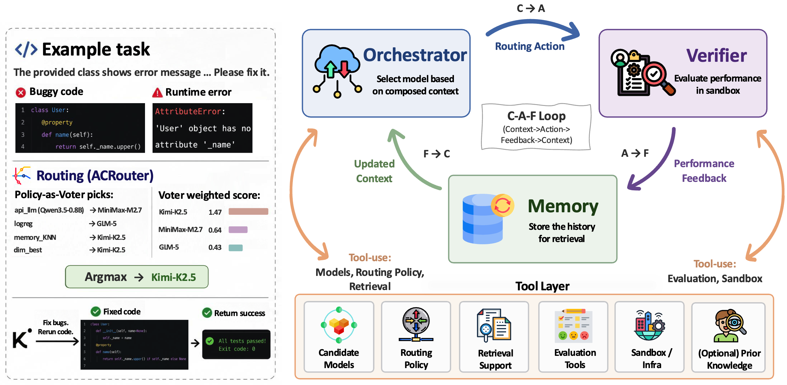
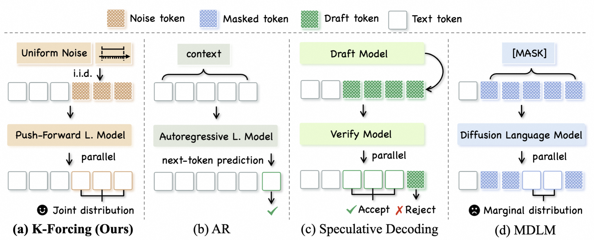

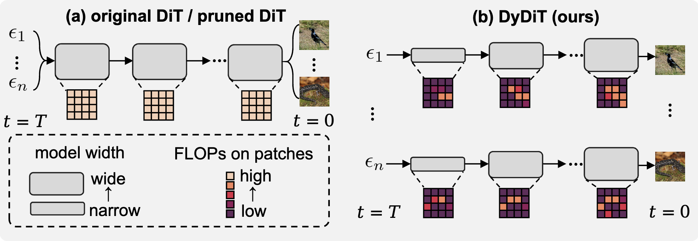
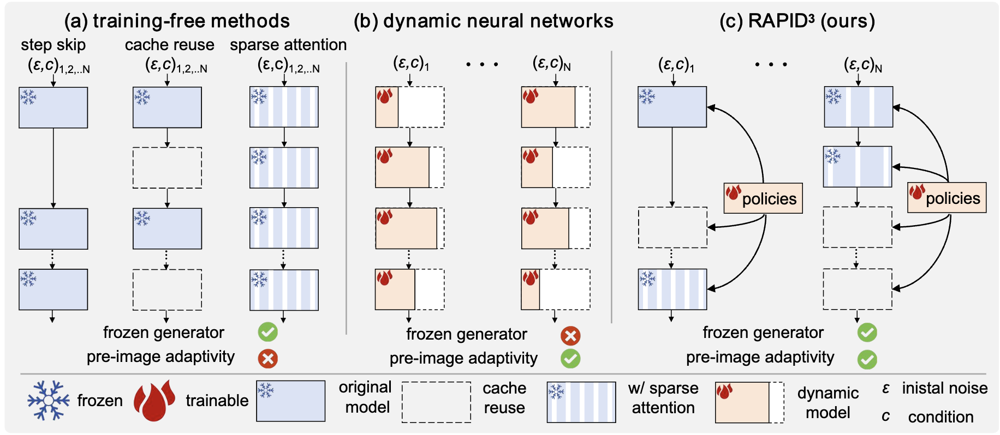
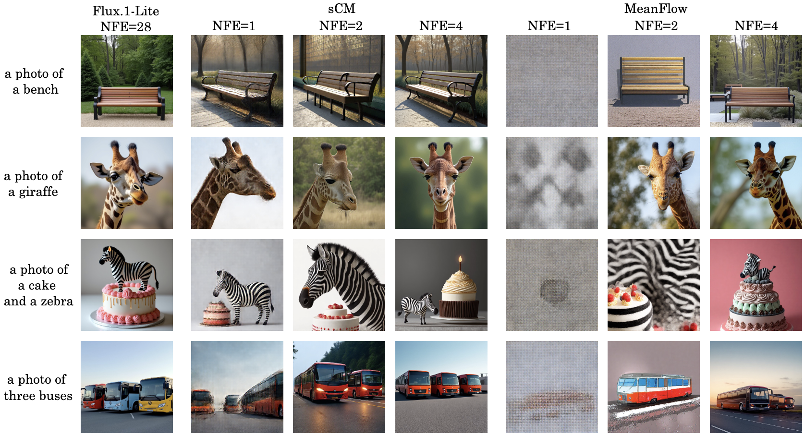
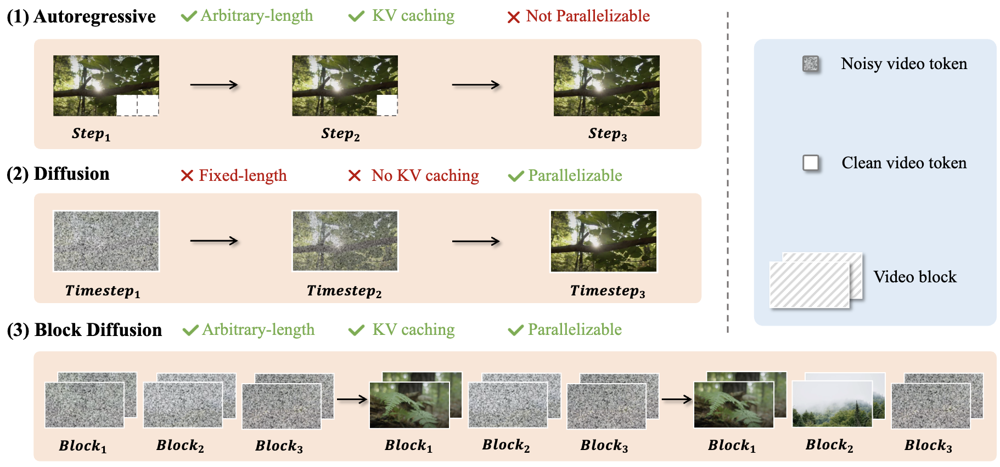
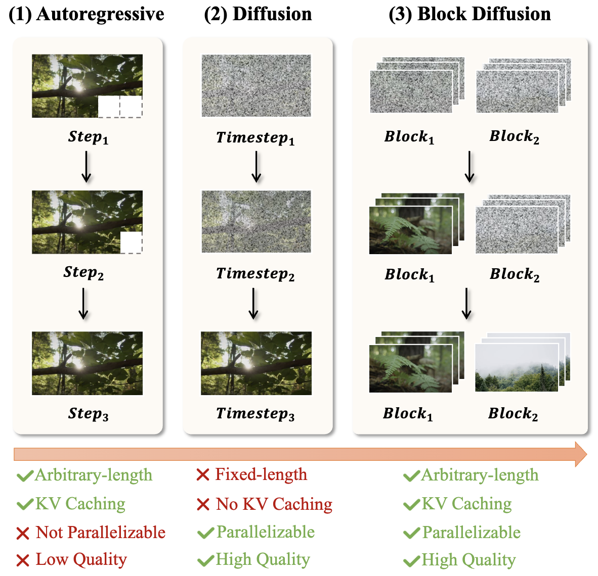
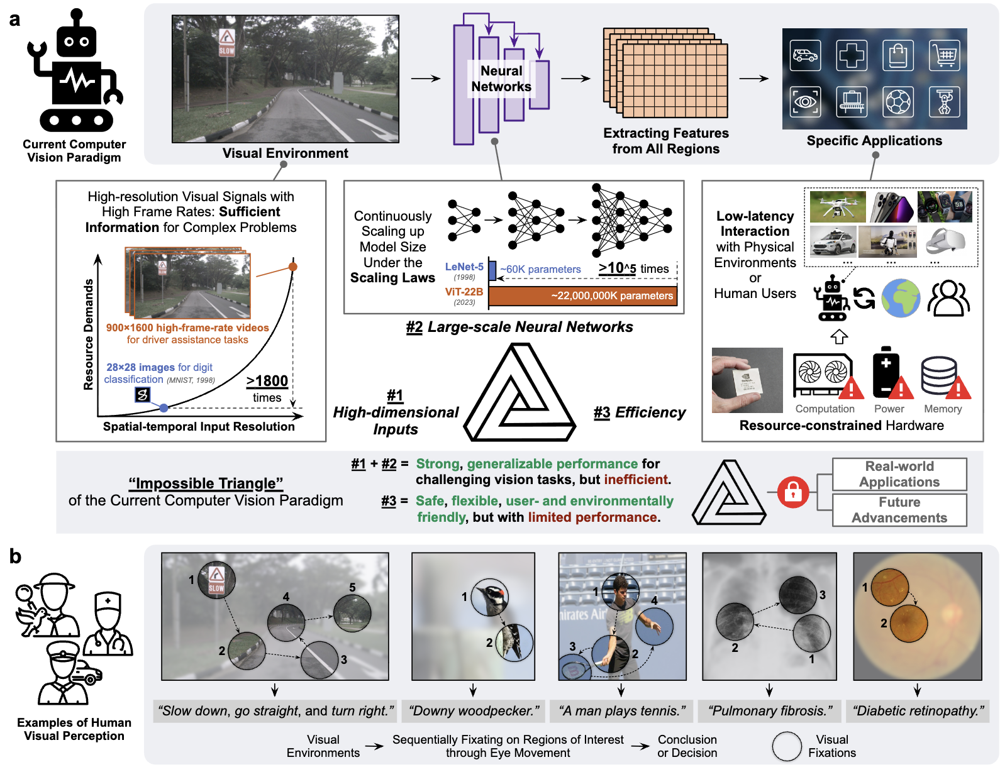
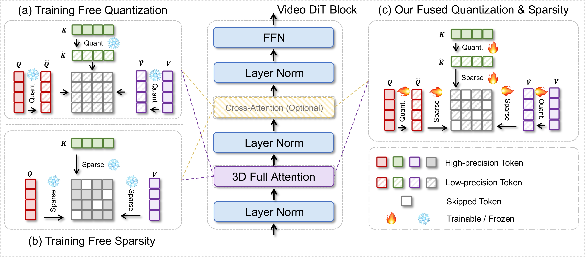
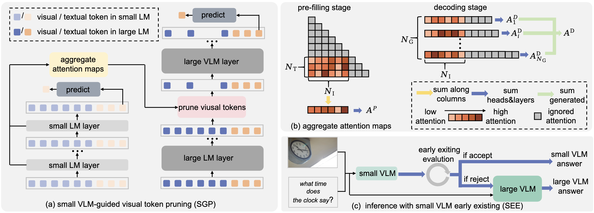
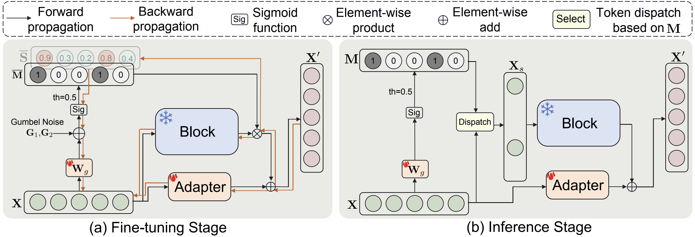
Building efficient and adaptive models for visual generation and inference. Ph.D. from Tsinghua University, advised by Prof. Gao Huang and Prof. Shiji Song.
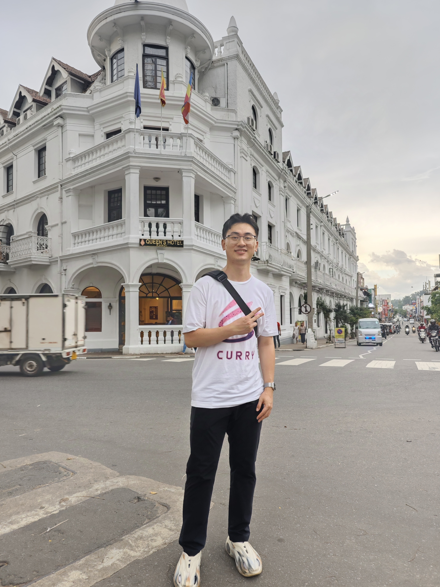
My research explores how generative and multimodal models can become faster, more adaptive, and more economical. I focus on efficient visual generation, dynamic neural networks, and efficient inference for visual and language models.
Recent work spans image and video diffusion, world simulation, VLM and LLM inference, and agentic model routing. I also maintain an interest in fundamental learning problems, including long-tailed learning and fine-grained learning.











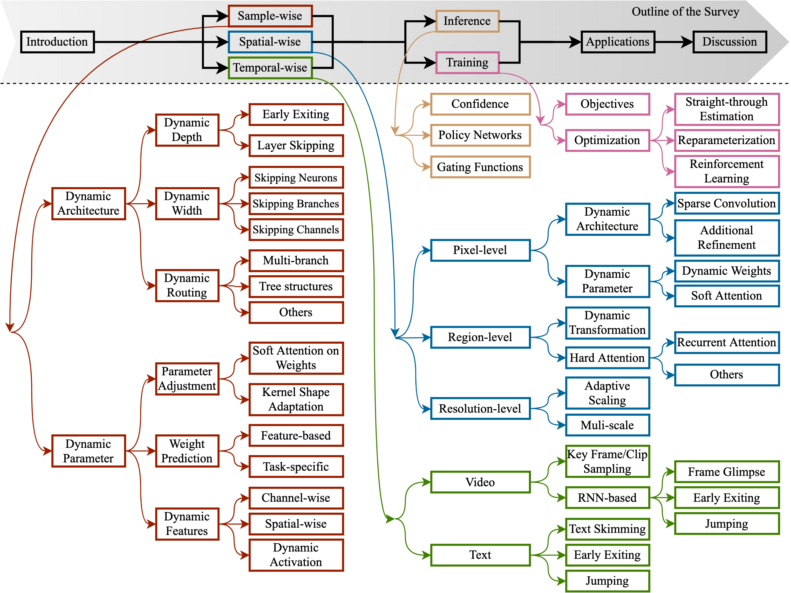
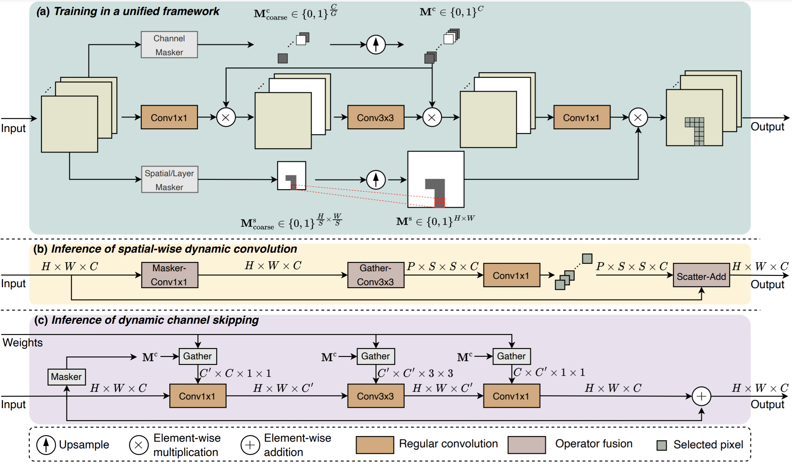
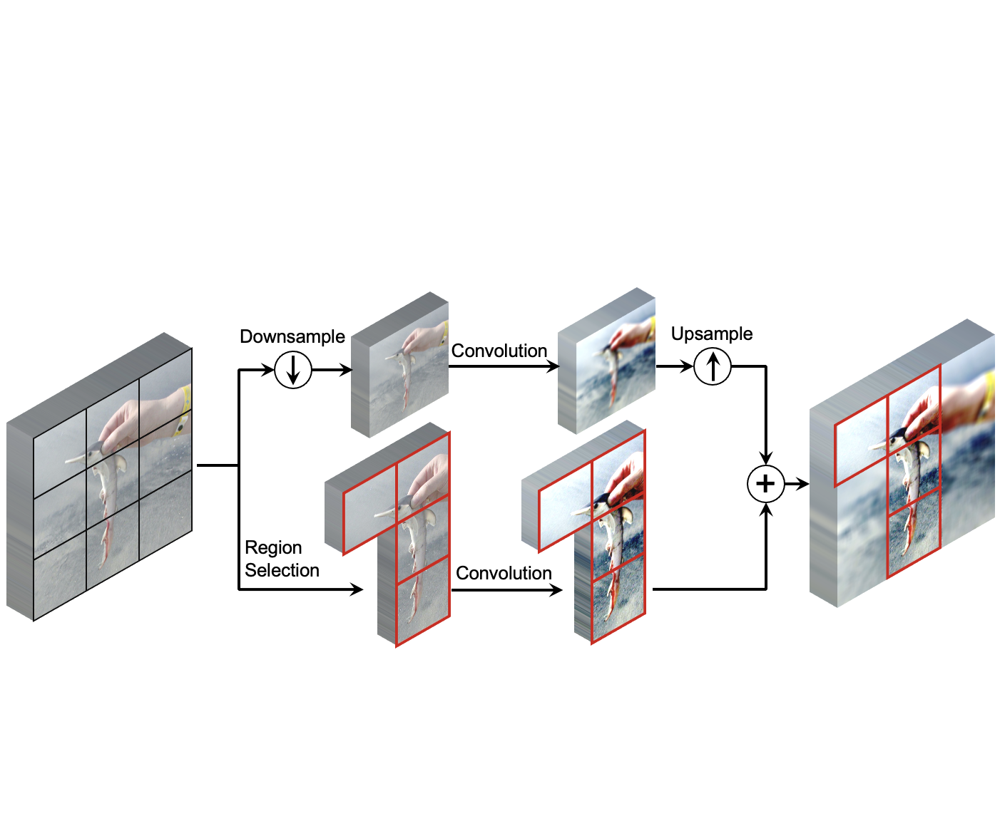
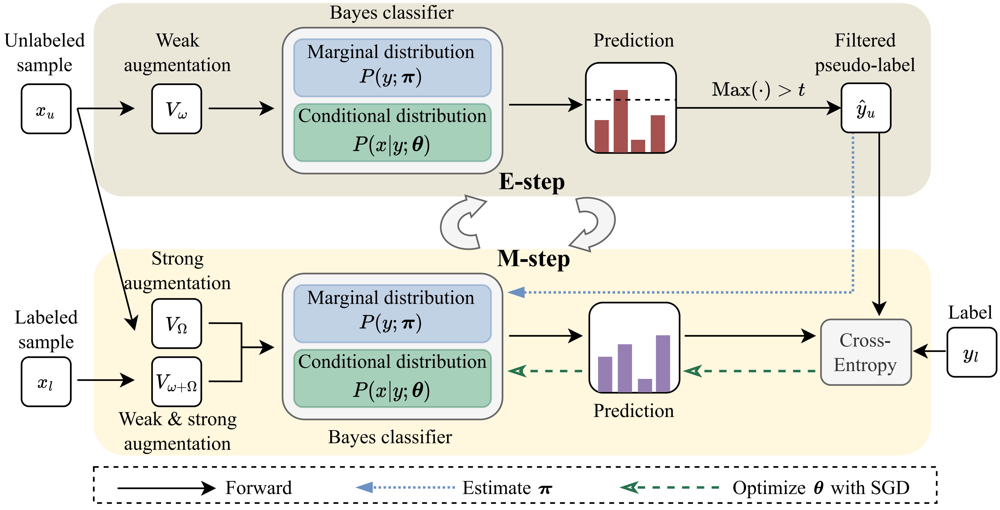
For research discussions and collaborations, feel free to reach out.